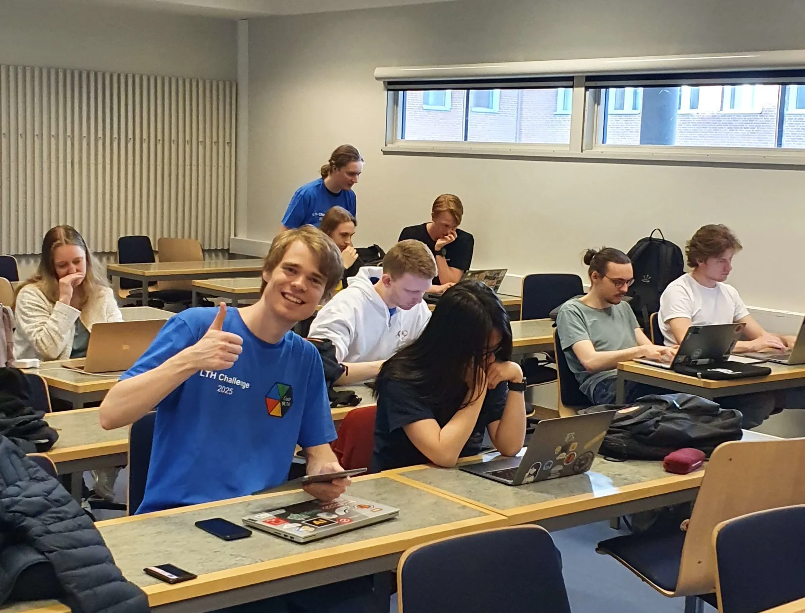
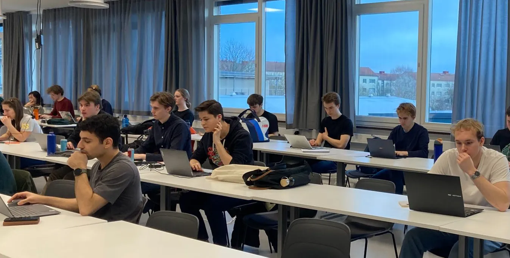
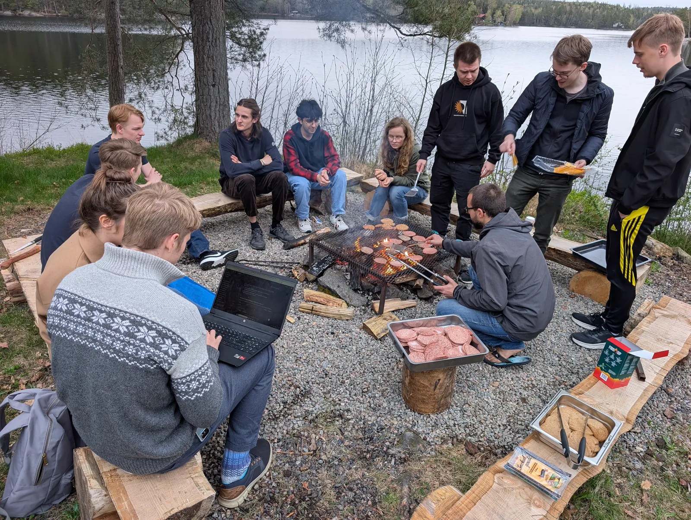
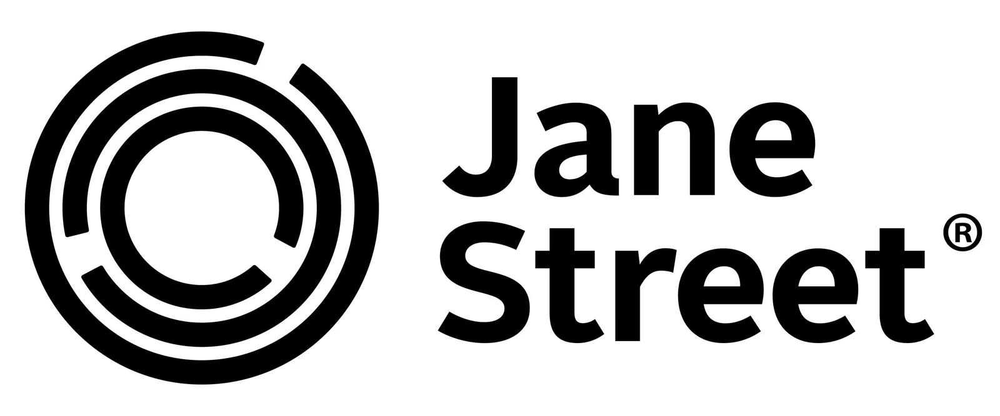

CHALMERS CODING CLUB
TISDAGSTRÄFFAR
Varje tisdag ses vi för att lära oss nya algoritmer och gött häng :)
Alla är välkomna och vi brukar bjuda på baguetter 😋
Mer info på Discord!
Se schemat för tisdagsträffarna här

CHALMERS CHALLENGE
Chalmers Challenge är en tävling i algoritmisk problemlösning. Tävlingen har som avseende att vara intressant och utmanande för både nybörjare och erfarna tävlare. Bästa chalmeristen koras Chalmers mästare i programmering.
Tävlingen är även en del av serien Swedish Coding Cup. Presterar man bra i flera av dessa deltävlingar blir man inbjuden till sverigefinal.
Läs om tidigare års tävlingar här

CCC BOOT CAMP

Chalmers Coding Club håller årligen i en boot camp. Under denna håller vi föreläsningar om algoritmer, spelar brädspel och har det trevligt. Detta event brukar vara Chalmers Coding Clubs årliga höjdpunkt, så se till att delta du med!
Alla är inbjudna att delta, oavsett om du pluggar grundskola, universitet eller jobbar. Håll utkik i vår Discord, där vi annonserar när nästa boot camp sker.
RESEBERÄTTELSER
Berättelser från när våra medlemmar åker på internationella programmeringstävlingar.
CHALMERS GOLFMÄSTERSKAP
Den första april varje år håller Chalmers i en tävling i
golf kodgolf. Ett problem, 24h, kortast lösning vinner.
Vinnaren får titeln Golfmästare på Chalmers Coding Clubs Discord tills nästa golftävling. Vill du tävla? Håll utkik i Discord 1 april 00:00.
Vill du testa själv? Alla golfmästerskap går att spela i efterhand här.
SPONSORER

KONTAKT
Mail: styrelsen@chalmerscoding.club
Ordförande:
- Rasmus Hulthe (zazmuz)
- Joel Andersson (erwinia)
- Joshua Andersson (matistjati)
- David Bergström (davebs)
- Ryan Tan (gnaghnagvzv)
- Hugo Bäckman (hugobackman)
- Sigge Olofsgård (magesiguess)
- Julia Mårtensson (_naphthalene)
- Rebecka Mårtensson (rebecka5090)
- Harry Zhang (hairez)